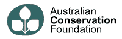

Links
|
Save Our Oceans Save Our Rainforest |
All three of the links to the left allow you to make an environmental donation simply by clicking. It can't get much easier to do good than that, what takes you a couple of minutes really makes a difference in peoples lives. See the other sections links (like the Animals one for Primates and Big Cats) for more click to donate links. |
|
Greenpeace Australia |
What can be said about this organization which has not already been said. Greenpeace is at the fore front of environmental management and has acheived an unprecedented public profile. One of the more famous moments in their history was the bombing of their ship 'The Rainbow Warrior' by the French Secret service, a sure sign they are doing something right. |
| With so many species facing annihalation the WWF has been active for many years in seeking their preservation. They co-operate far more than organizations like Greenpeace with governments and corporations, which is a good or a bad thing, ie they get a lot more money, but speak out less on the need for major institutional reform. One great way of helping is to sign up for a PANDA PASSPORT which will send you alerts when there are worldwide environmental issues that need your support. Often you just need to click on a link to sign a petition etc, and you earn points for every action which let you download beautiful images, screensavers etc, and none of it costs you anymore than the price of your internet connection. |

|
The mission of our non-profit society is to transform our commercial media culture and direct it towards ecological and social awareness. Our mass media, our business culture constantly urges us to consume more and more, yet we know that our planet cannot survive this onslaught, with regards to pollution, biodiversity, resource depletion and climate change. This consumption machine, image making factory is what we want to bring to a grinding halt. We want to create a new media culture that has the human condition rather than commercialism as its heart and soul. |
|  | The Australian Conservation Foundation is one of the oldest and most respected environmental organisations in Australia. If you become a member they have a great magazine they periodically send you, which has great articles in it. Working in partnership with farmers and government, the ACF is making a real difference. |
|
Australian Site |
Friends of the Earth has worked for conservation and public health protection for more than a quarter of a century. In the process, we have learned to focus on the underlying social and economic causes of environmental problems both at home and abroad, building coalitions and working with our unique Friends of the Earth international network. |